DLSS Updater
A simple, open-source desktop tool for finding and updating NVIDIA DLSS files across your applications.

FAQ
What are DLSS files?
DLSS files are NVIDIA libraries used by supported applications for features such as AI upscaling, frame
generation, and ray reconstruction. Files like nvngx_dlss.dll, nvngx_dlssg.dll, and nvngx_dlssd.dll
are typically bundled with applications and can be updated to access newer versions of these features,
potentially improving image quality, performance, or compatibility.
How does DLSS Updater work?
It scans a selected folder, detects DLSS files, and updates them when newer versions are available.
Where do the DLSS files come from?
DLSS files are now served from the
dlss-files pre-release in the DLSS Updater .NET repository
instead of the separate dlss-updater-files repository. The release holds the DLLs and
dlss_manifest.json, and is updated in place when new DLSS versions are available. It is marked
as a pre-release so app releases remain the latest release. v1.2.1 and older still download from
dlss-updater-files.
“But you can swap DLSS files with the NVIDIA App now, why do I need this?”
DLSS Updater exists for people who don't want a ~170 MB application and its background processes just to manage a few DLSS files. It's a small tool that does one job and then gets out of the way. I'm not a fan of software accumulating features until a simple utility turns into an entire platform. Not everything needs to be bundled into an app that manages your apps, runs in the background, collects usage data, and does a dozen other things you never asked for.
Why choose this over DLSS Swapper or other similar apps?
Other apps offer more features, but DLSS Updater focuses on simplicity. It's a lightweight, no-setup tool that quickly scans your application folders and updates DLSS files without extra integrations or background processes.
Does it require installation?
No. DLSS Updater is a portable tool and can be run directly from a folder or USB drive.
How do I uninstall DLSS Updater?
DLSS Updater is portable, so there's nothing to uninstall. It doesn't install services, run background
processes, or make permanent system changes. To remove it, optionally choose
File > Delete all backups to delete the .dubackup.zip backups it made beside
your DLSS files, then choose File > Remove cached files and settings, which deletes
%LOCALAPPDATA%\DLSS Updater and closes the app. Then delete the executable.
How large is the download?
The executable is around 255 KB, or around 110 KB as a ZIP. Additional space will be used when downloading updated DLSS files.
What languages does it support?
DLSS Updater is available in English, German, French, Spanish, Italian, Polish, Ukrainian, Simplified Chinese, Russian, Japanese, Korean, Czech, Dutch, and Portuguese. It uses your system language by default when supported, and you can change it at any time from the Language menu.
Can updating DLSS files break my applications?
Yes. Newer DLSS versions aren't guaranteed to work correctly with every application. Updating files can cause compatibility issues, visual glitches, or crashes. Back up your original files before updating so you can restore them if necessary.
Why did my antivirus flag DLSS Updater?
Some antivirus software may flag the tool because downloading and replacing files can resemble behaviour associated with malware. This can trigger heuristic detections, particularly in small utilities distributed as standalone executables. DLSS Updater is open source, so you can inspect its code. To reduce the risk of downloading a modified or malicious copy, obtain it from the official project source and review any antivirus detections rather than automatically assuming they're false positives.
Why was the original repository unavailable for so long?
The original Python repository was taken down following a DMCA notice filed by the owner of Recol/DLSS-Updater. I believe the notice abused the DMCA process and kept the repository offline for far too long. GitHub has since reinstated the original repository, but the project has moved to C#. Read my original response to the notice.
What happened to the Python version?
The Python version is now a legacy release, and development has moved to C#. You can still find the Python version's source code and latest release on GitHub.
Where can I find the source code?
The current .NET version's source code is available in the DLSS Updater .NET GitHub repository.
DLSS Version Support
Super Resolution
nvngx_dlss.dll
310.9.16
Added November 24, 2026
Ray Reconstruction
nvngx_dlssd.dll
310.9.16
Added November 24, 2026
Frame Generation
nvngx_dlssg.dll
310.9.16
Added November 24, 2026